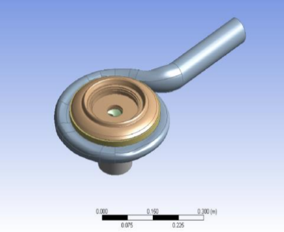
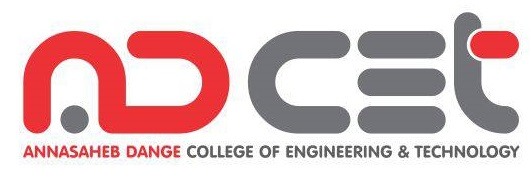
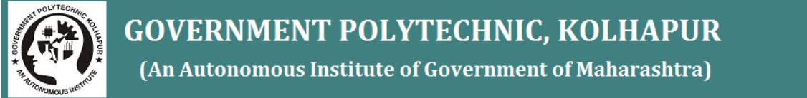

System Engineer + IT consultant + Web Designer
Have expertise and experience in:
- Python ,Java, Unix solutions.
- Web design (HTML,CSS,JS)
- RDBMS (MySQL)
- Cloud solutions(Azure)
- Production Automation
Focus on one thing until success, success is journey of million milestones-Ashwamedh Bahod
yet through a bridge of teamwork it can be achieved.
Work Experience:
I am currently working at Tata cunsultancy services limited(TCSL)

Job Designation: Assistant System Engineer
Job Location: Pune, Maharastra, India.
Date of joining: 15th of july, 2021
Job is service related to privide consultancy and research and development for Engineering services and IOT(EIS & IOT).
Featured Projects:
Shape optimization of back cavity filling to improve ther performance of pump as turbine(PAT).
Pump as turbine (PAT) is the best alternatives for the conventional turbine in micro hydro power plants. The objective of the present paper is to analyze the flow physics and estimation of the efficiency of PAT when the shape and size of the back cavity is changed. The design optimization of back cavity is carried out by numerical method. The efficiency of PAT is increased after filling the back cavity with a solid component. The efficiency increases mainly due to reduction of disk friction losses.
My Role was to carryout simulations in Ansys envirnment and making appropreate changes to the pump model.
View project Paper | case studyEducation Details:
Annasaheb Dange Collage of Engineering and Technology(ADCET) - Ashta, Sangli.
From here I complited my graduation with batchlor of technology(B.tech) degree with first class with distinction in year 2021.
Government Polytechnic, Kolhapur.
From here I complited my Diploma in Mechanical Engineering (DME) degree with first class with distinction in year 2018.
Shri Vasantrao Jayvantrao Deshmukh Highschool, Kolhapur.
From here I complited my SSC examination with first class with distinction in year 2015.